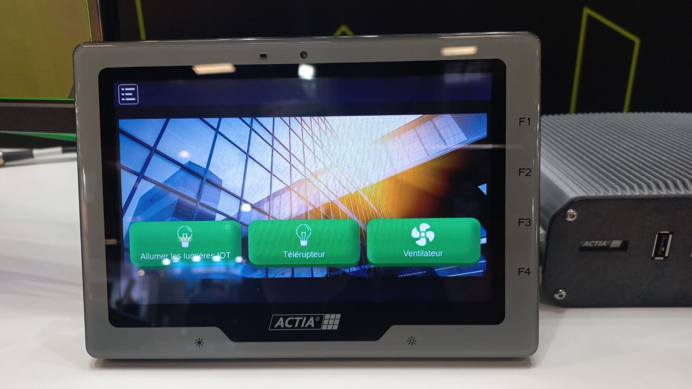

Alternance de troisième année de BUT Informatique
Septembre 2024 à août 2025
Contexte de l'entreprise
Actia est un leader mondial de l'électronique en mouvement, spécialisé dans le diagnostic, l'architecture et l'infotainement des véhicules. Découvrez ses actualités, ses divisions, ses valeurs et ses implantations dans le monde
Missions réalisées
Mise à jour de la librairie de sécurité
La première mission m'a permise de m'habituer à l'environnement, la méthode de travail et à l'équipe. J'ai du adapter l'Implémentation de fonctions qui faisaient des appels à cette librairie.
Développement interface web MADT
Cette deuxième mission avait pour but de développer une page web (html, css, js) permettant d'envoyer des requêtes aux objets connectés de l'application Hyperviseur Actia.
Méthode de travail
Au sein de mon équipe la méthode de travail était classique. Tous les jours nous faisions un petit points avec mon maître d'alternance. J'utilisais microsoft to do pour m'organiser au quotidien et ne rien oublier.
Résultats obtenus
Développement interface web MADT
Ce projet a pu être présenté lors du salon expoprotection 2024.
Compétences acquises
Ce stage m'a permis de m'améliorer en développement C++, et d'apprendre à développer sous Windows avec la librairie Win32. Ensuite, j'ai pu vivre ma première expérience professionnelle en entreprise en développement informatique. De plus, j'ai appris à lire de la documentation technique en anglais et j'ai découvert plus amplement une librairie de sécurisation open-source. J'ai pu m'améliorer en architecture logicielle, diagrammes UML et de classes. J'ai découvert des protocoles réseau de transfert de vidéo.